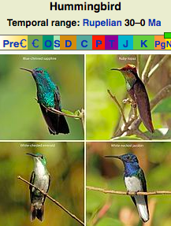

From Wikipedia, the free encyclopedia
Hummingbirds are birds native to the Americas and comprise the biological family Trochilidae. With about 360 species, they occur from Alaska to Tierra del Fuego, but the vast majority of the species are found in the tropics. They are small birds, with most species measuring 7.5–13 cm (3–5 in) in length. The smallest extant hummingbird species is the 5 cm (2.0 in) bee hummingbird, which weighs less than 2.0 g (0.07 oz). The largest hummingbird species is the 23 cm (9.1 in) giant hummingbird, weighing 18–24 grams (0.63–0.85 oz). They are specialized for feeding on flower nectar, but all species also consume flying insects or spiders.
The family Trochilidae was introduced in 1825 by Irish zoologist Nicholas Aylward Vigors with Trochilus as the type genus.[5][6] Molecular phylogenetic studies of the hummingbirds have shown that the family is composed of nine major clades.[7][8] When Edward Dickinson and James Van Remsen, Jr. updated the Howard and Moore Complete Checklist of the Birds of the World for the 4th edition in 2013 they divided the hummingbirds into six subfamilies.[9]
Hummingbirds are thought to have split from other members of Apodiformes, the insectivorous swifts (family Apodidae) and treeswifts (family Hemiprocnidae) about 42 million years ago, probably in Eurasia.[8] Despite their current New World distribution, the earliest known species of humming bird are known from the early Oligocene (Rupelian ~34-28 million years ago) of Europe, belonging to the genus Eurotrochilus, which is very similar in its morphology to modern hummingbirds.[13][16][17] A phylogenetic tree unequivocally indicates that modern hummingbirds originated in South America, with the last common ancestor of all living hummingbirds living around 22 million years ago.[8]
A hummingbird is named for the prominent humming sound its wingbeats make while flying and hovering to feed or interact with other hummingbirds.[39] Humming serves communication purposes by alerting other birds of the arrival of a fellow forager or potential mate.[39] The humming sound derives from aerodynamic forces generated by both the downstrokes and upstrokes of the rapid wingbeats, causing oscillations and harmonics that evoke an acoustic quality likened to that of a musical instrument.[39][40] The humming sound of hummingbirds is unique among flying animals, compared to the whine of mosquitoes, buzz of bees, and 'whoosh' of larger birds.[39][40] The wingbeats causing the hum of hummingbirds during hovering are achieved by elastic recoil of wing strokes produced by the main flight muscles – the pectoralis major (the main downstroke muscle) and supracoracoideus (the main upstroke muscle).[41]
As far as is known, male hummingbirds do not take part in nesting.[89] Most species build a cup-shaped nest on the branch of a tree or shrub,[90] although a few tropical species normally attach their nests to leaves.[citation needed] The nest varies in size relative to the particular species – from smaller than half a walnut shell to several centimeters in diameter.[89][91]
To serve courtship and territorial competition, many male hummingbirds have plumage with bright, varied coloration[94] resulting both from pigmentation in the feathers and from prismal cells within the top layers of feathers of the head, gorget, breast, back and wings.[95] When sunlight hits these cells, it is split into wavelengths that reflect to the observer in varying degrees of intensity,[95] with the feather structure acting as a diffraction grating.[95] Iridescent hummingbird colors result from a combination of refraction and pigmentation, since the diffraction structures themselves are made of melanin, a pigment,[94] and may also be colored by carotenoid pigmentation and more subdued black, brown or gray colors dependent on melanin.[95]
Hummingbird flight has been studied intensively from an aerodynamic perspective using wind tunnels and high-speed video cameras.
When courting, the male Anna's hummingbird ascends some 35 m (115 ft) above a female, before diving at a speed of 27 m/s (89 ft/s), equal to 385 body lengths/sec – producing a high-pitched sound near the female at the nadir of the dive.[109] This downward acceleration during a dive is the highest reported for any vertebrate undergoing a voluntary aerial maneuver; in addition to acceleration, the speed, relative to body length, is the highest known for any vertebrate. For instance, it is about twice the diving speed of peregrine falcons in pursuit of prey.[109] At maximum descent speed, about 10 g of gravitational force occur in the courting hummingbird during a dive (Note: G-force is generated as the bird pulls out of the dive).[109] By comparison to humans, this is a G-force acceleration well beyond the threshold of causing near loss of consciousness in fighter pilots (occurring at about +5 Gz) during flight of fixed-wing aircraft in a high-speed banked turn.[109][110]
Hummingbirds are restricted to the Americas from south central Alaska to Tierra del Fuego, including the Caribbean. The majority of species occur in tropical and subtropical Central and South America, but several species also breed in temperate climates and some hillstars occur even in alpine Andean highlands at altitudes up to 5,200 m (17,100 ft).[118]
Most North American hummingbirds migrate southward in fall to spend winter in Mexico, the Caribbean Islands, or Central America.[125] A few southern South American species also move north to the tropics during the southern winter. A few species are year-round residents of Florida, California, and the far southwestern desert regions of the US.[125] Among these are Anna's hummingbird, a common resident from southern Arizona and inland California, and the buff-bellied hummingbird, a winter resident from Florida across the Gulf Coast to South Texas. Ruby-throated hummingbirds are common along the Atlantic flyway, and migrate in summer from as far north as Atlantic Canada,[125] returning to Mexico, South America, southern Texas, and Florida to winter.[125][126] During winter in southern Louisiana, black-chinned, buff-bellied, calliope, Allen's, Anna's, ruby-throated, rufous, broad-tailed, and broad-billed hummingbirds are present.[125]
Some species of sunbirds of Africa, southern and southeastern Asia, and Australia resemble hummingbirds in appearance and behavior, as do perhaps also the honeyeaters of Australia and Pacific islands. These two groups, however, are not related to hummingbirds, as their resemblance is due to convergent evolution.[164]